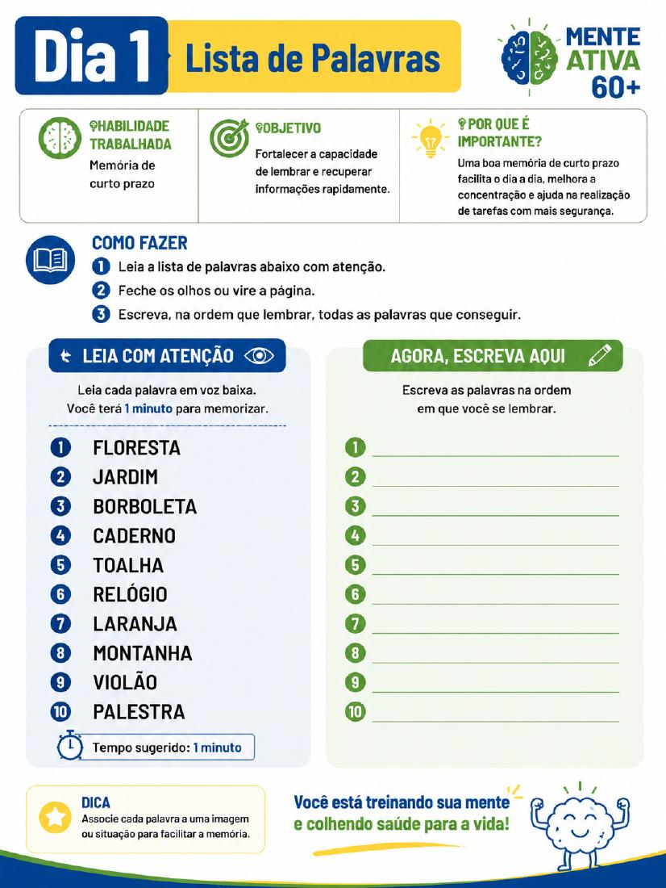
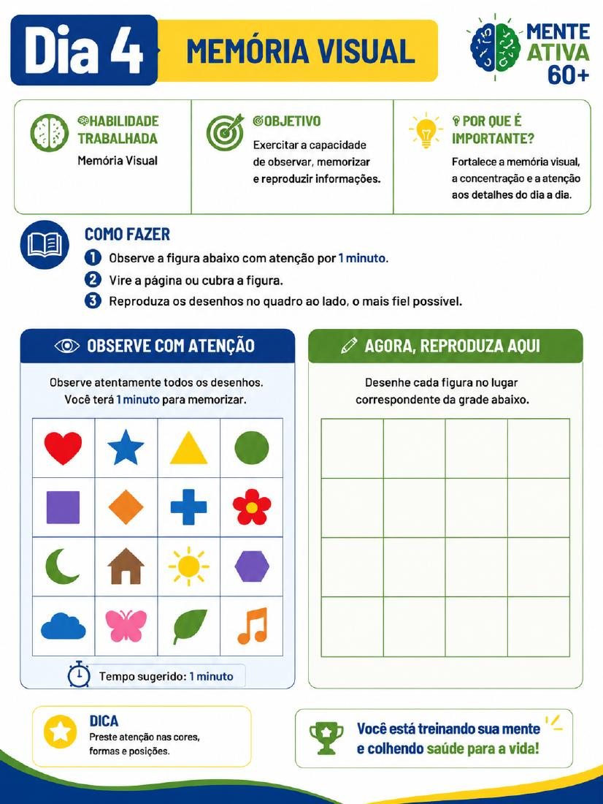
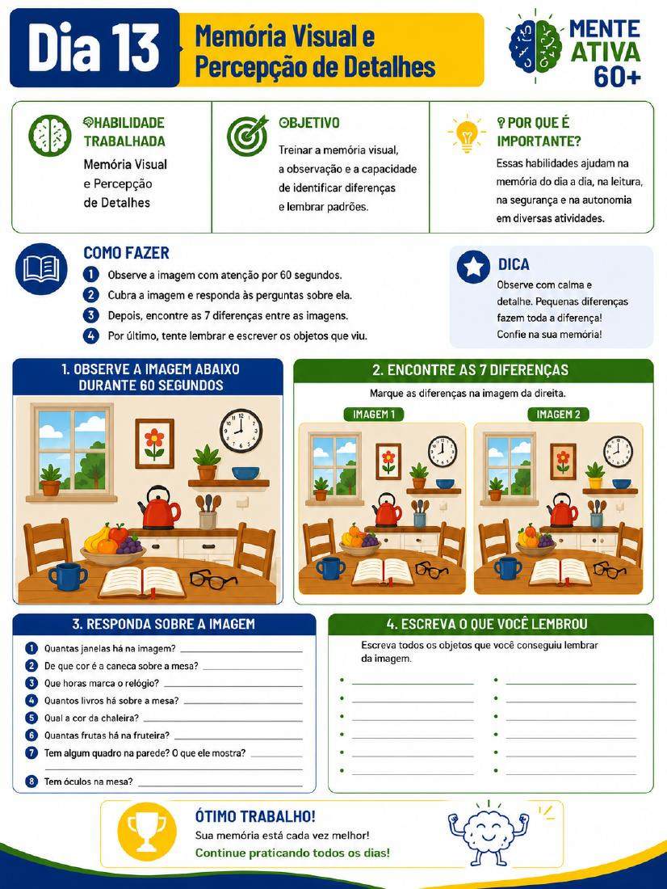
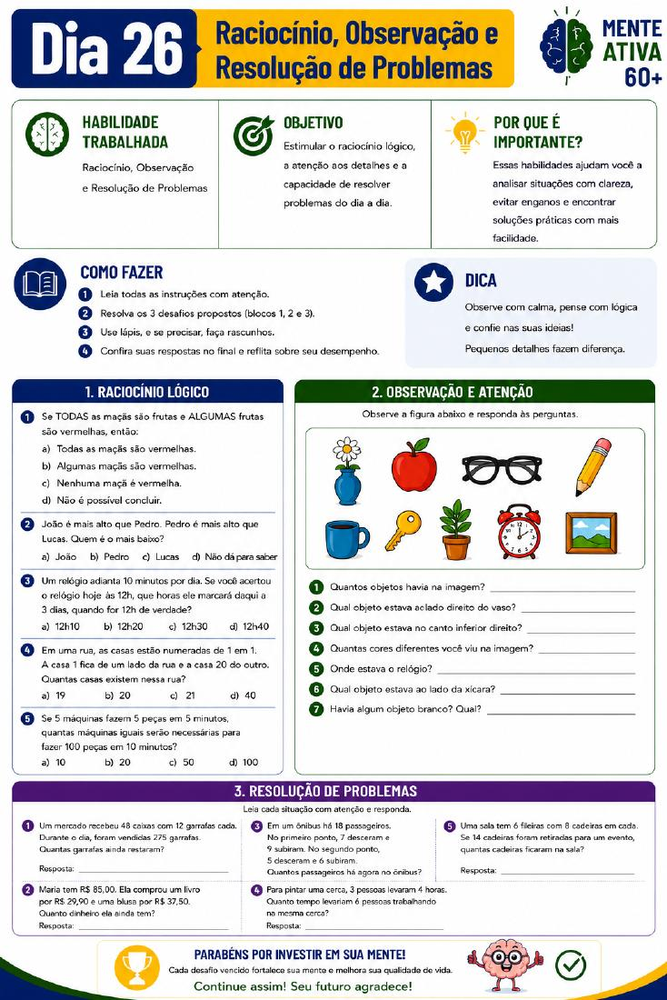

Um dia de cada vez
Abra o material, faça a atividade proposta e continue no dia seguinte.
Programa digital de 30 dias
Exercite memória, atenção e raciocínio com atividades simples, letras grandes e um desafio por dia — no seu próprio ritmo.
Compra processada com segurança pela Hotmart
Feito para o seu ritmo
Nem sempre é fácil encontrar atividades com boa leitura, orientações claras e uma sequência que ajude a manter a constância. O Mente Ativa 60+ reúne tudo isso em um programa diário acolhedor e fácil de acompanhar.
Abra o material, faça a atividade proposta e continue no dia seguinte.
Letras grandes, alto contraste e páginas organizadas para pessoas 60+.
Desafios de memória, atenção, linguagem, lógica e raciocínio.
Veja por dentro
O material principal tem 44 páginas, com orientações, autoavaliações, 30 atividades diárias e gabarito completo.




Como funciona
Finalize o pagamento único pela Hotmart.
Baixe o PDF e guarde para consultar quando quiser.
Leia no tablet ou imprima para escrever à mão.
Reserve cerca de 15 minutos para cada atividade.
O que você recebe
Bônus incluídos
Você recebe os três PDFs abaixo sem custo adicional.
21 hábitos, uma rotina prática de 15 minutos e um plano de 30 dias.
Um guia educativo para diferenciar situações ocasionais de sinais que merecem avaliação.
Informações curtas e fáceis de consultar sobre memória e envelhecimento.
Este material é para você?
Oferta completa
Sem mensalidade e sem parcelamento
QUERO GARANTIR MEU ACESSOCompra segura pela HotmartSua compra protegida
Você terá 7 dias de garantia para conhecer o material. Caso decida que ele não é para você, poderá solicitar o reembolso seguindo as regras da Hotmart.
Perguntas frequentes
Não. Você receberá arquivos digitais em PDF. Poderá usá-los no tablet ou imprimir para uso pessoal.
O acesso é permanente. Recomendamos baixar e guardar os arquivos após a compra.
A proposta é reservar, em média, cerca de 15 minutos por dia.
Sim. O e-book principal inclui o gabarito dos 30 exercícios no final.
Não. É um material educativo e de entretenimento cognitivo. Não realiza diagnóstico e não substitui atendimento profissional.
A compra possui garantia de 7 dias e o reembolso é solicitado pelos canais da Hotmart.
Comece hoje
Tenha acesso ao Mente Ativa 60+ e aos três bônus por R$ 29,90.
QUERO COMEÇAR AGORA